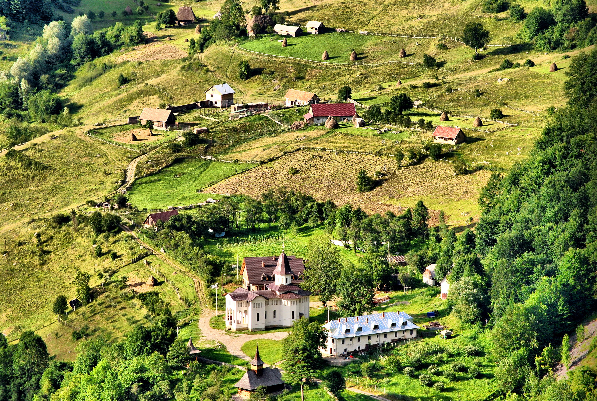
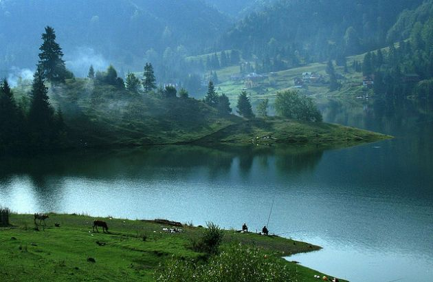
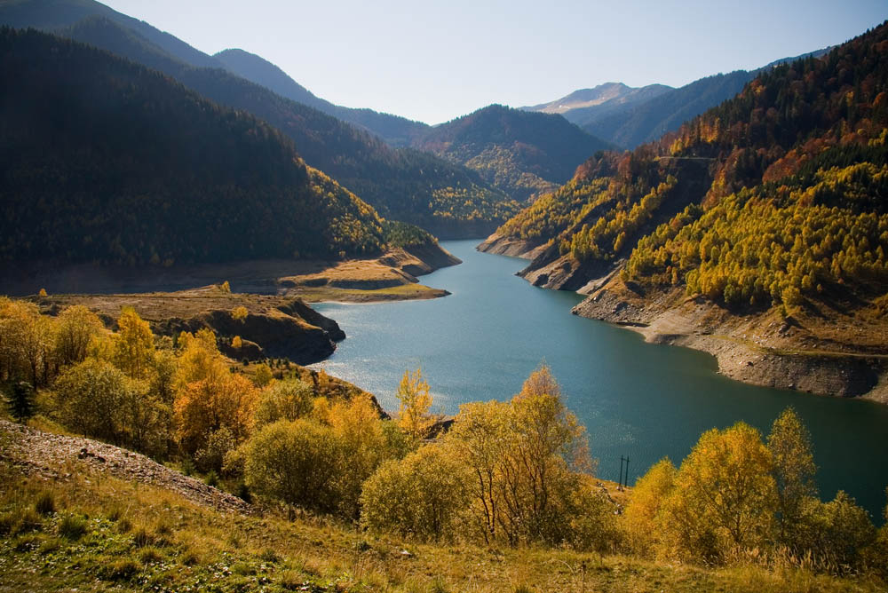
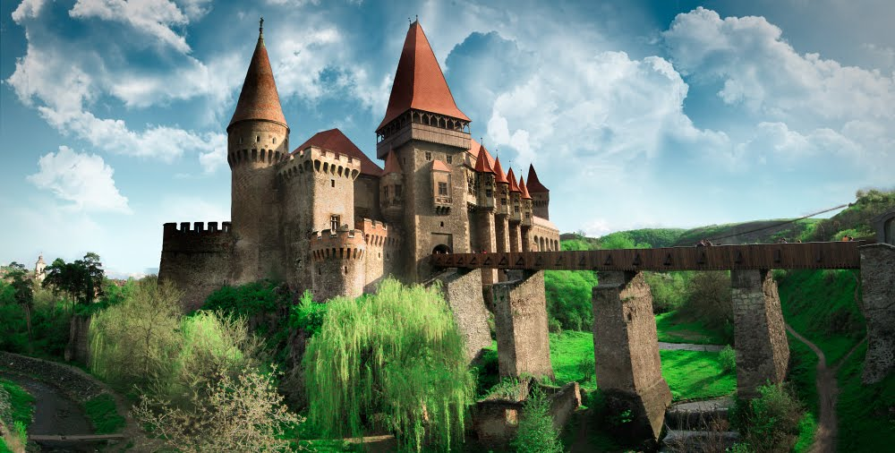

Scurta introducere
Turismul în România se concentrează asupra peisajelor naturale și a istoriei sale bogate. Traversată de apele Dunării, România are un scenariu sensibil, incluzând frumoșii și împăduriții Munții Carpați, Coasta Mării Negre și Delta Dunării, care este cea mai mare deltă europeană atât de bine păstrată. Cu rolul de a puncta peisajele naturale sunt satele, unde oamenii de acolo trăiesc și mențin pentru sute de ani tradițiile. În România este o abundență a arhitecturii religioase și a orașelor medievale și a castelelor.
   